En la actualidad, los tableros de Medición y Protección, así como los instrumentos y transductores que utilizan tales sistemas, son de suma importancia en una amplia variedad de actividades domésticas e industriales. El crecimiento en cantidad y complejidad de los instrumentos que se utilizan en la industria ha sido importante en especial durante la década de los setenta y ochenta, conforme se han desarrollado diversos esquemas de automatización.
Un tablero eléctrico de automatización es aquel que está constituido por equipos electromagnéticos, tales como relés auxiliares, contadores, temporizadores electrónicos, temporizadores neumáticos, etc.
¿Cuál es su función?
|
Ventajas y desventajas de los tableros eléctricos
Es importante destacar las ventajas y desventajas, para poder compararla con otras alternativas.
Ventajas
1. La totalidad de sus componentes se pueden adquirir rápidamente.
2. Su estudio, fabricación e instalación es muy difundido desde hace décadas.
3. La adaptación de los responsables del mantenimiento es rápida, debido a que todo es conocido.
4. Se enseña en todas las universidades, institutos técnicos y escuelas técnicas.
5. Existe gran cantidad de material de consulta, tales como libros, revistas, catálogos, separatas, etc., y aprender su lógica resulta sencilla.
No existen inconvenientes en cuanto al lugar de su instalación, ya que todos los equipos son de ambientes industriales, salvo en aquellas zonas donde puedan existir fugas de gases explosivos.
Desventajas
1. El costo de estos tableros es alto, incrementándose de acuerdo al tamaño del proceso a automatizar.
2. Generalmente ocupan mucho espacio.
3. Requiere mantenimiento periódico, debido a que gran parte de sus componentes están constituidos por piezas móviles sujetos a desgaste.
4. Cuando se origina una falla es muy laboriosa su ubicación y reparación.
5. No son versátiles, solamente se les pueden utilizar para una determinada aplicación.
6. Con el tiempo disminuye su disponibilidad, debido al incremento de la probabilidad de fallas.
7. No es posible, con equipos electromecánicos captar señales de alta frecuencia, para ello se requiere el apoyo de la electrónica.
8. En tableros grandes el consumo de energía es representativa.
9. No permite una comunicación directa entre todos sus componentes, es necesario hacer varias modificaciones, adquiriendo para ello, equipos de interfaces, elevando de esta forma su costo.
Tableros de control industrial
Que apariencia tienen?
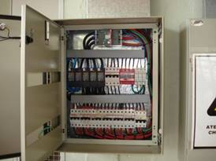
Tablero de control industrial convencional
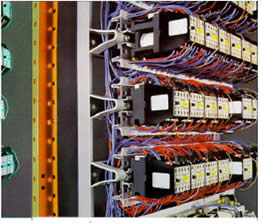
Relés auxiliares en un tablero eléctrico convencional.
Claro, con tal cantidad de equipos con que está construido el tablero eléctrico, debe ser tedioso encontrar una falla.
Analizando las desventajas que se han señalado acerca de los tableros eléctricos convencionales, donde para muchas empresas no es tolerable aceptar alguna de ellas, es conveniente, sobre todo, en el aspecto económico, discutir su uso.
Clasificación
LOS TABLEROS SE CLASIFICAN:
- Según su ubicación y función
- Según el uso de la energía eléctrica
SEGÚN SU UBICACIÓN Y FUNCIÓN, TENEMOS LOS SIGUIENTES TABLEROS:
TABLEROS GENERALES (T.G.):
Son los tableros principales de las instalaciones. En ellos estarán montados los dispositivos de protección y maniobra que protegen los alimentadores y que permiten operar sobre toda la instalación interior en forma conjunta o fraccionada.
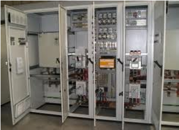
TABLEROS GENERALES AUXILIARES (T.G.A.):
Son tableros que serán alimentados desde un tablero general y desde ello se protegen y operan sub-alimentadores que alimentan tableros de distribución.

TABLEROS DE DISTRIBUCIÓN (T. D.):
Son tableros que contienen dispositivos de protección y maniobra que permiten proteger y operar directamente los circuitos en que está dividida la instalación o una parte de ella. Pueden ser alimentados desde un tablero general, desde un tablero general auxiliar o directamente desde el empalme.
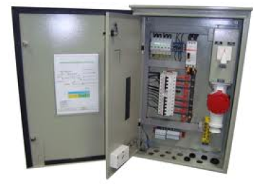
TABLERO DE PASO (T. P.):
Son tableros que contienen fusibles cuya finalidad es proteger derivaciones que por su capacidad de transporte no pueden ser conectadas directamente al alimentador, sub.-alimentador o línea de distribución de la cual está tomada.
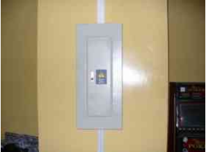
TABLERO DE COMANDO (T. COM.):
Son tableros que contienen dispositivos de protección y maniobra que permiten proteger y operar en forma simultanea sobre artefactos individuales o grupos de artefactos pertenecientes a un mismo circuito.
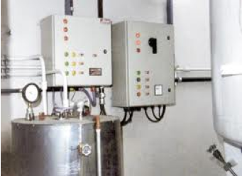
TABLEROS CENTRO DE CONTROL (T. C.C.):
Son tableros que contienen dispositivos de protección y de maniobra o únicamente dispositivos de maniobra y que permiten la operación de grupos de artefactos en forma individual, en conjunto, en sub-grupos en forma programada o no programada.
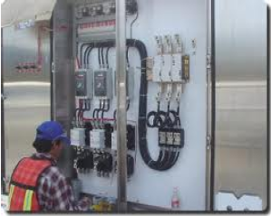
DE ACUERDO AL USO DE LA ENERGÍA ELÉCTRICA, TENEMOS:
TABLEROS DE ALUMBRADO (T. A.)
Es un elemento que sirve para controlar y dividir circuitos de una instalación eléctrica, en la cual también es posible alimentar y controlar diversos centros de carga; esta protección está controlada por interruptores termomagnéticos de uno, dos y tres polos. Los tableros van dirigidos a pequeños y grandes negocios, oficinas, centros comerciales donde se requiere dividir la instalación por zonas.
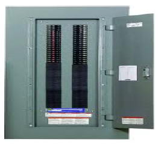
TABLEROS DE FUERZA (T. F.):
Podemos indicar que un CENTRO DE CARGA, es un tablero metálico que contiene una cantidad determinada de interruptores termomagnéticos, generalmente empleados para la protección y desconexión de pequeñas cargas eléctricas y alumbrado. En el caso de que en un tablero eléctrico se concentre exclusivamente interruptores para alumbrado, se conoce como "tablero de alumbrado"; si concentra otros tipos de cargas, se conoce como "TABLERO DE FUERZA".
Los tableros de fuerza, pueden ser monofásicos o trifásicos, razón por la cual pueden soportar interruptores termomagnéticos monopolares, bipolares o tripolares.
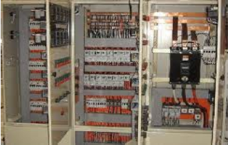
TABLEROS DE CALEFACCIÓN (T. CALEF.):
Se debe verificar en todos los tableros el balance térmico entre las perdidas originadas por las protecciones, cables, juegos de barras, conexiones, y otros elementos como señales luminosas transformadores de medición etc.
El balance térmico se realiza en watt y los datos de perdidas deben ser extraídos de los manuales o catálogos de cada fabricante. La capacidad de evacuar calor medida en watt por la envolvente (gabinete) depende de los materiales, de la forma constructiva, y del modo de instalación (empotrado en pared o exterior). Este dato en todos los casos debe ser suministrado por el fabricante de gabinetes.
Se considera que una envolvente satisface térmicamente a las necesidades térmicas del tablero eléctrico contenido en su interior, cuando la potencia en watt capaz de evacuar es mayor que la pérdida en watt generada por todos los
elementos que conforman el tablero eléctrico.
TABLEROS DE CONTROL (T. C.):
El tablero de control (T.C.) es una herramienta, el diagnóstico y monitoreo permanente de determinados indicadores e información ha sido y es la base para mantener un buen control de situación en muchas de las disciplinas de la vida.
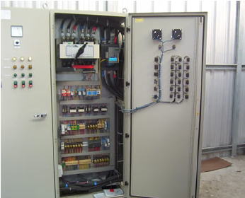
Como ejemplo de estos podemos señalar a la: medicina, basada en mediciones para el diagnóstico de la salud de los pacientes, a la aviación, cuyos indicadores de tablero de control sintetiza la información del avión y del entorno para evitar sorpresas y permite a los pilotos dirigir el avión a buen puerto; el tablero de un sistema eléctrico o de una represa son otros ejemplos. En todos estos casos el Tablero permite a través del color de las luces y alarmas ser el disparador para la toma de decisiones. En todos estos ejemplos es fundamental definir los indicadores a monitorear.
TABLEROS DE SEÑALIZACION (T. S.):
En una instalación eléctrica, los tableros eléctricos son la parte principal. En los tableros eléctricos se encuentran los dispositivos de seguridad y los mecanismos de maniobra de dicha instalación.
En términos generales, los tableros eléctricos son gabinetes en los que se concentran los dispositivos de conexión, control, maniobra, protección, medida, SEÑALIZACIÓN y distribución, todos estos dispositivos permiten que una
instalación eléctrica funcione adecuadamente.
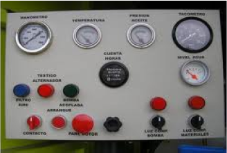
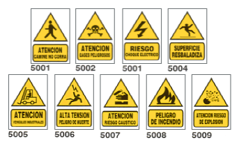
UNIDADES DE MANDO Y SENALIZACION
La comunicación entre hombre y maquina agrupa todas las funciones que necesita el operador para controlar y vigilar el funcionamiento de un proceso.
El operador debe estar capacitado para que pueda percibir y comprender los sucesos y responder de una manera eficaz, a la solución de un determinado imprevisto.
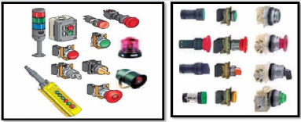
PILOTOS Y PULSADORES
Los pulsadores se usan en mandos generales de arranque y de parada, también en mandos de circuito de seguridad (paro de emergencia).
Pueden ser metálicos cromados para ambientes de servicio intensivo.
Totalmente plástico, para ambientes agresivos.
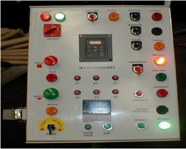
BALIZAS Y COLUMNAS LUMINOSAS
Elementos de visualización óptica, nos indica el estado de un determinado proceso.
Baliza: consta de un único elemento luminoso.
Columnas: varios elementos luminosos, a veces con avisador acústico.
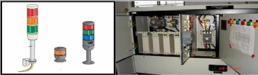
ACTIVIDAD 1
Realizar un recorrido por las instalaciones del Centro de Automatización Industrial para ubicar diferentes tipos de tableros y gabinetes de instalaciones eléctricas.
- Identificar el tipo de tablero según su ubicación y función y de acuerdo al uso de energía eléctrica.
- Clasificar los elementos instalados en el tablero (dispositivos de visualización, maniobra, protección y control), tomar nota de sus referencias y consultar sus especificaciones técnicas en el manual del fabricante.
- Realizar una tabla que contenga el inventario de tableros y los elementos identificados y sus características técnicas.
Tips de diseño:
El diseño de tableros eléctrico tiene muchas peculiaridades, hay mucha variedad de aplicaciones, sin embargo es importante mencionar que cuando están instalados especialmente en la industria lo menos que queremos saber es de problemas o que no se encuentra el soporte adecuado. Pasan muchas cosas como cuando un cable accidentalmente se desprendió de la bornera (terminal block) y no sabemos dónde iba conectado, entonces mientras mejor identifiquemos el tablero y los diagramas nos resultará más fácil la solución de problemas.
Primeramente es importante en el diseño hacer un diagrama de disposición de equipo, se puede hacer antes o después de forma identificada, eso ayudará al técnico encargado del montaje y al usuario facilitará el encontrar los equipos involucrados.
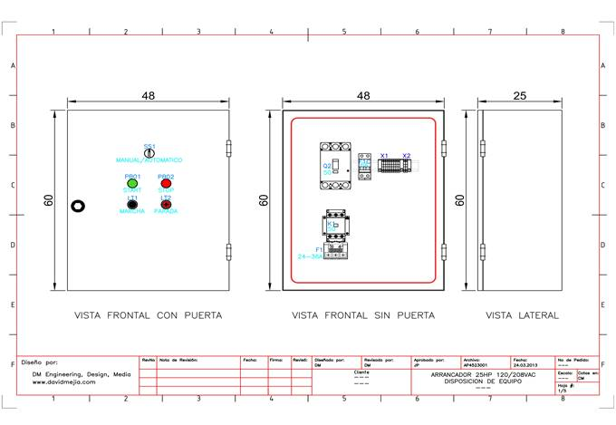
Luego se presenta el diagrama de fuerza, son las conexiones de potencia involucradas en el tablero (o panel de control), equipos como interruptor principal, fusibles principales, contactores, relays de sobrecarga, arrancadores suaves, variadores de velocidad, interruptores bajo carga, seccionadores, cuchillas, etc.
Es importante identificar las líneas, fases, equipos con su número identificador y capacidad en amperes o potencia y además referenciando las líneas salientes al diagrama de control.
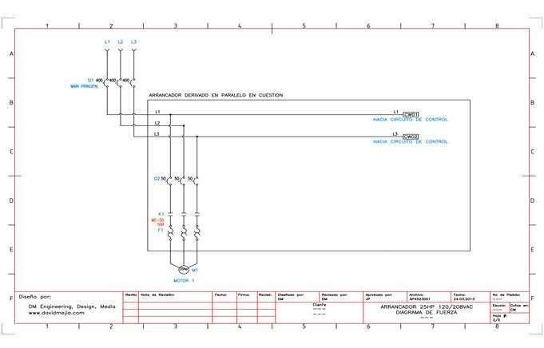
El diagrama de control es el que más hay que identificar ya que es quien controla el tablero. Acá es importante hacer referencia a las señales de origen y si hay más diagramas el destino. Es importante para ayudar al técnico de montaje y al usuario la identificación de cable (wire mark) para que si hay algún problema sea importante consultar con el fabricante del tablero y el plano para la solución de fallas posibles. Cuando no hay identificación se complica mucho la solución de problemas y eso deja clientes insatisfechos.
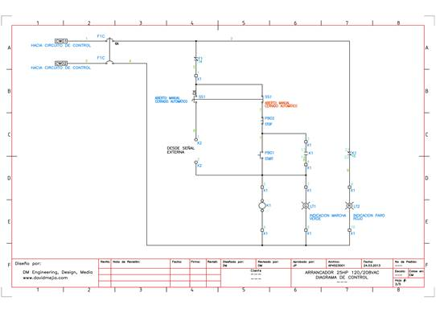
Como diagramas adicionales no obligatorios es importante mencionar la lista de equipo utilizado (BOM, Bill of Materials), por si en un futuro necesita algún repuesto se le indica el número de parte al proveedor.
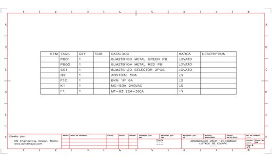
Y también si hay borneras involucradas, es importante hacer un diagrama en donde se muestre la bornera, sus números, el número de cable origen y el destino y a que equipo se dirige cada cable para tener todavía una mejor identificación del tablero y una solución de problemas de conexionado más rápida.

De esta forma tenemos la gestión de un trabajo o proyecto de forma completa, el ejemplo fue con un arrancador de motor directo sencillo, sin embargo cuando ya el proyecto se hace más grande todo debe ser más ordenado porque crece el cableado y la identificación debe ser más rigurosa.
El software necesario para realizar el diseño puede ser Autocad Electrical 2013, Microsoft Visio, Solidworks, Elecworks u otro, hay mucha variedad.
Lo que conlleva una mala planeación y diseño de un sistema de control:
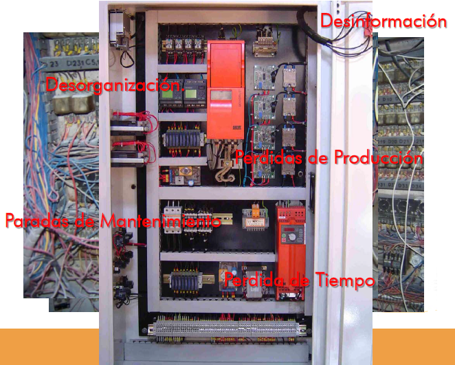
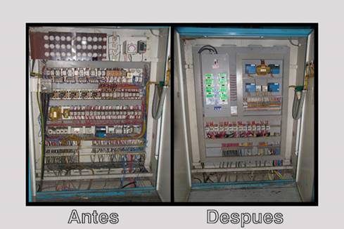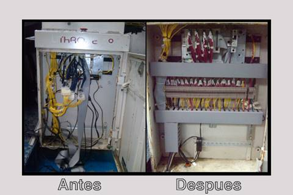
Contactor
Es un mecanismo cuya misión es la de cerrar unos contactos, para permitir el paso de la corriente a través de ellos. Esto ocurre cuando la bobina del contactor recibe corriente eléctrica, comportándose como electroimán y atrayendo dichos contactos.
Aspecto físico
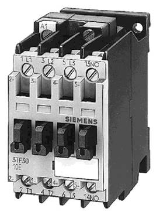
Partes de que está compuesto:
- Contactos principales: 1-2, 3-4, 5-6.
Tienen por finalidad abrir o cerrar el circuito de fuerza o potencia.
- Contactos auxiliares: 13-14 (NO)
Se emplean en el circuito de mando o maniobras. Por este motivo soportarán menos intensidad que los principales.
El contactor de la figura solo tiene uno que es normalmente abierto.
- Circuito electromagnético:
Consta de tres partes.
1.- El núcleo, en forma de E. Parte fija.
2.- La bobina: A1-A2.
3.- La armadura. Parte móvil.
Símbolo:
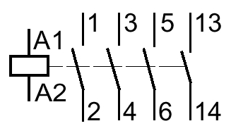
Elección del Contactor:
Cuando se va a elegir un Contactor hay que tener en cuenta, entre otros factores, lo siguiente:
- Tensión de alimentación de la bobina: Esta puede ser continua o alterna, siendo esta última la más habitual, y con tensiones de 12 V, 24 V o 220 V.
- Número de veces que el circuito electromagnético va a abrir y cerrar. Podemos necesitar un Contactor que cierre una o dos veces al día, o quizás otro que esté continuamente abriendo y cerrando sus contactos. Hay que tener en cuenta el arco eléctrico que se produce cada vez que esto ocurre y el consiguiente deterioro.
- Corriente que consume el motor de forma permanente (corriente de servicio). Por lo tanto es conveniente el uso de catálogos de fabricantes en los que se indican las distintas características de los contactores en función del modelo.
Terminales y Regletas
Los terminales son elementos de fijación metálicos que se acoplan al extremo de un cable facilitando la conexión de este. Las regletas son piezas de plástico que llevan unos contactos metálicos en su interior, y sirven para unir los extremos de dos cables. A continuación vamos a ver los terminales y las regletas más usadas:
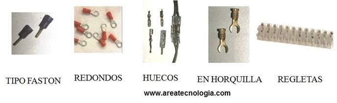
Canalizaciones
Son el conjunto de elementos por los que discurre el cableado de una instalación eléctrica. Su finalidad es proteger los conductores.
Pueden ir empotradas o en el exterior. Están formadas por los tubos y por las cajas de empalmes.
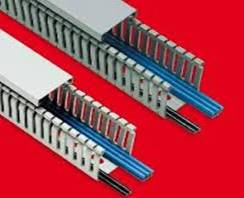